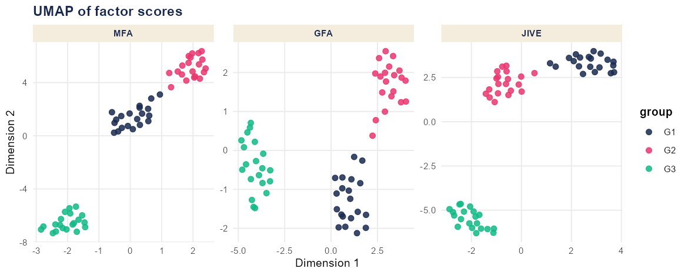
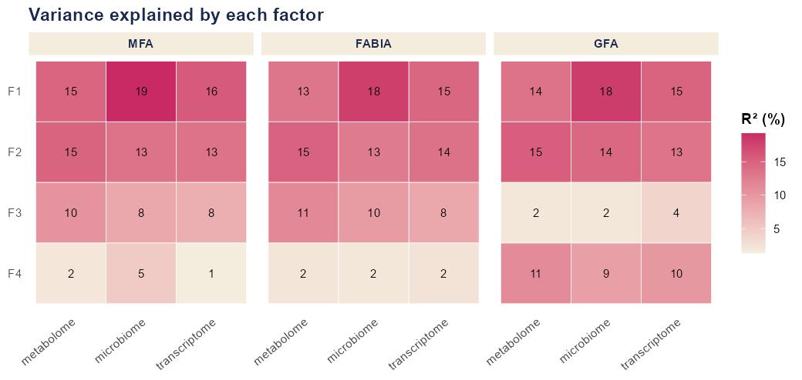
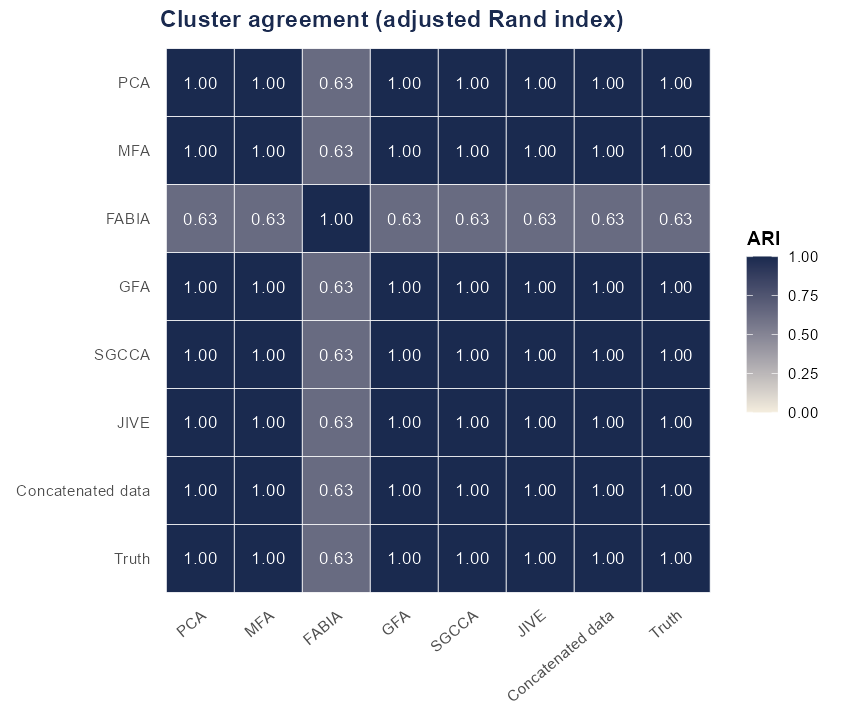
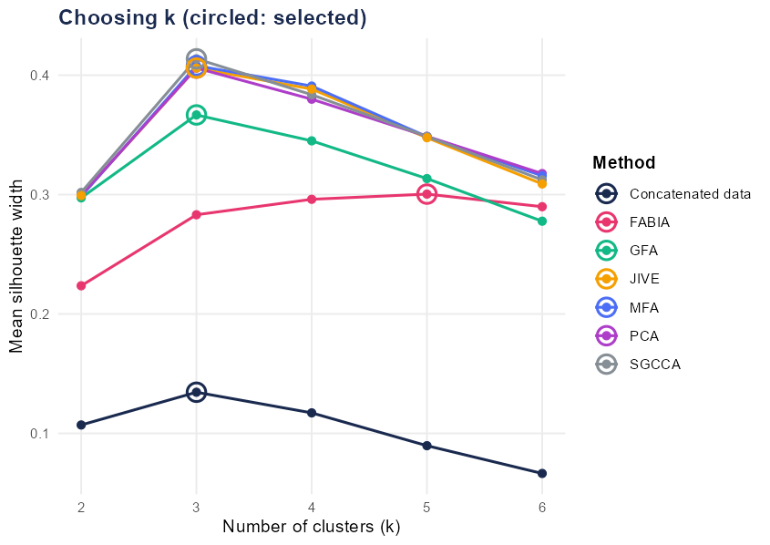
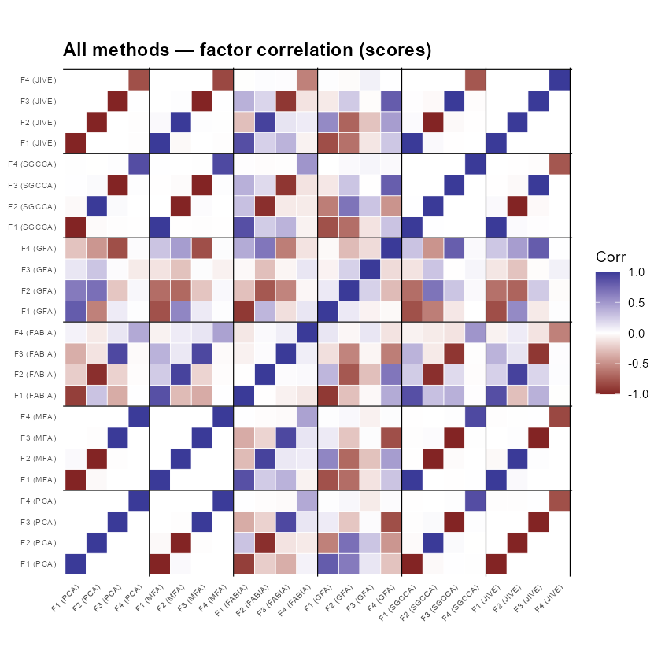
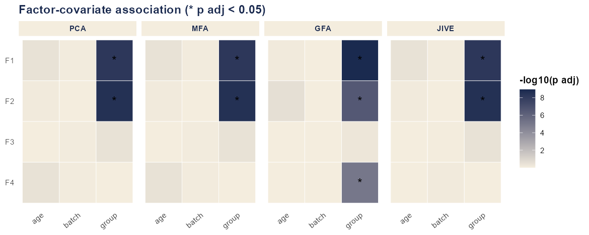

factomics
One toolbox for multi-omics factor analysis in R. Eight factor methods behind one function, one result format, and the whole downstream workflow: embeddings, clustering, benchmarking and interpretation. Also available as a ready-to-run Docker image.
Why factomics
Multi-omics studies measure the same samples through several layers (transcriptome, metabolome, microbiome, …). Latent factor methods summarise these layers into a few shared factors, but each method lives in its own package, with its own input format, output format and quirks. factomics gives them one input (a named list of features x samples matrices) and one output (scores, loadings, meta per method), so that every downstream function works with every method and methods can be compared side by side.
Matrix factorisation
Block-weighted PCA, Multiple Factor Analysis and JIVE. PCA, MFA, JIVE.
Bayesian factor models
Sparse, view-aware factors with automatic relevance. MOFA, GFA, FABIA.
Graph-guided
Pathway knowledge guides the loadings, robust to wrong edges. RABFA (Zhang et al. 2024).
Correlation-based
Components that maximise covariance between views. SGCCA.
Embeddings
PCA, UMAP and t-SNE of each method’s factor space. embed_results().
Clustering
k-means, hierarchical or PAM, with k chosen by silhouette. cluster_results().
Benchmark and interpret
Factor matching, variance explained, top features and covariate tests. benchmark_factor_methods().
See it in action
Every figure below comes from the simulated example data, in a few lines of factomics.






60-second quick start
# install.packages("remotes")
remotes::install_github("lucp12891/factomics")
library(factomics)
sim <- simulate_multiomics(n_samples = 60, seed = 1) # or a list of your own matrices
fx <- factomics(sim$data, metadata = sim$metadata,
methods = c("PCA", "MFA", "FABIA", "GFA", "SGCCA", "JIVE"),
k = 4, embeddings = c("umap", "tsne"))
plot_embedding(fx$embeddings, sim$metadata, color_by = "group")
plot_variance_explained(fx$results)
plot_clusters(fx$clusters, "agreement")Or, with nothing installed but Docker:
Where to next
- Get started: the full workflow on simulated data.
- Methods: what each method does, and how to run and tune it.
- Embeddings and visualisation: PCA, UMAP, t-SNE, heatmaps, loadings.
- Clustering: finding sample subgroups from the factors.
- Benchmarking methods: do the methods agree, and which recovers the truth?
- Your own data: reading files, preprocessing and metadata.
-
Docker and command line: the container and
factomics-cli.